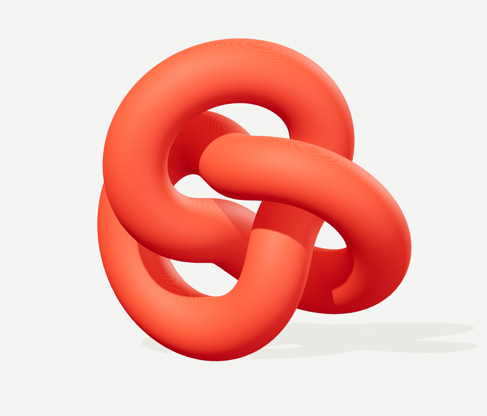

2026 秋招工程档案 / OPEN TO BUILD
orange.
先把机器做稳，
再把系统做宽。
3D 打印实习是主线，Klipper 运动学与调度是现场。
主线之外，继续做协议、机器人、数据与 AI 系统。

FORM STUDY
001 / CONTINUOUS
001 / CONTINUOUS
DIGITAL FORM.
PHYSICAL POSSIBILITY.
PHYSICAL POSSIBILITY.
SIGNAL → SYSTEM → EVIDENCEPROJECT INDEX
EMBEDDED+PROTOCOL+ROBOTICS+APPLIED AI+OPEN TO BUILD
RECRUITING SNAPSHOT把经历
变成证据。
变成证据。
08项目档案
02段实习
10K+行工程代码
TARGET ROLES
MCU / AIoT / Linux 网关 / ROS
01 / PRINTING INTERNSHIP + SYSTEMS
先做实机，再做系统。
3D 打印实习放在最前面；后面的项目，是同一套“把系统做出来、测出来、讲清楚”的延伸。
08 项目档案03 技术方向02 段实习
显示全部 8 件项目
A SELECTION OF WORK & EXPERIMENTS 持续更新
02 / THE ENGINEER
把问题拆开。
把结果交付。
我是 orange，来自武汉理工大学测控仪器与技术专业。喜欢拆解原理，也享受把一个想法从屏幕带到现实的过程。
我的主线是嵌入式与系统验证：从 PTP/IP 协议逆向，到 ROS 调度与本地数据管线，持续把复杂链路变成可复现的工程证据。
查看 GitHub 主页
ENGINEERING TIMELINE
让机器，更进一步
轻量智造（深圳）科技有限公司
Klipper 运动学算法 · 实习 / 四头固件架构研读
从现实，到三维世界
武汉中观自动化科技有限公司
3D 扫描仪验证 · 实习 / WiFi 6 传图与 RMS
TOOLS I THINK WITH
C / C++PythonKlipperSTM32 / ESP32CADLinux / Git